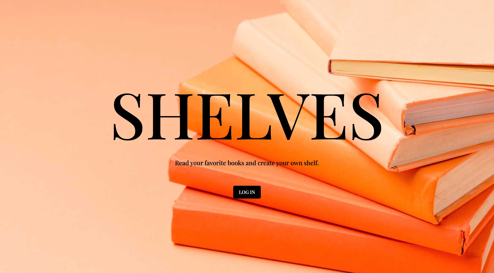
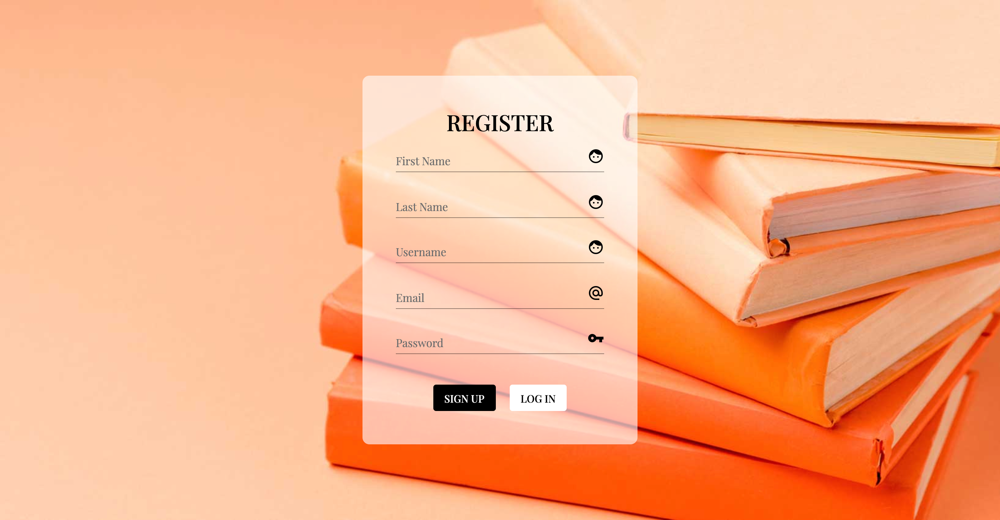
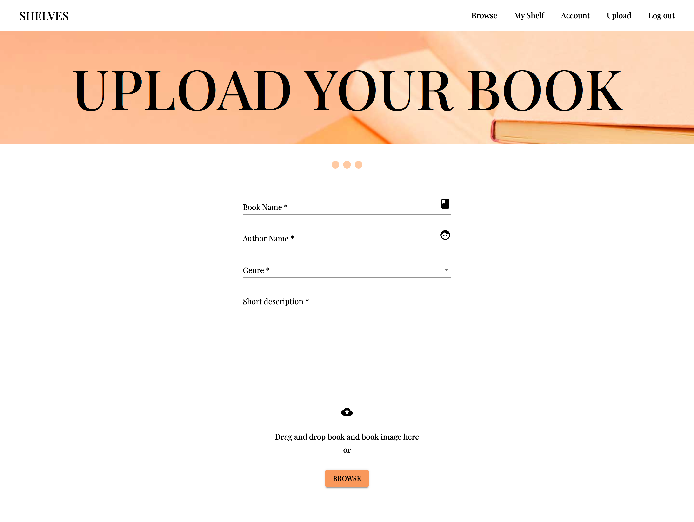

SHELVES
SHELVES
is a web application developed using Yii, MySQL, Angular, Angular Material, RxJS, CSS, HTML, Amazon Web Services (EC2, RDS, S3).
It allows a user to login, see the most popular reads, browse different categories of books (the fantasy shelf, the classics shelf...), read a short description of the book that will give him an idea about the plot.
Books can be added to the personal shelf. The user can also read the books online, setting bookmarks and flipping pages. Books that are currently being read have a section on the personal shelf page.
The website also offers the posibility of uploading a new book to the shelves, incouraging users to build an ever growing library.




